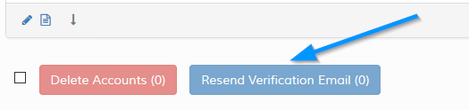

Resend Verification Email
This option ONLY appears when there are only unverified accounts on the screen or if you filter by unverified acounts. You`ll see the following
button.

Use the checkboxes provided to highlight the accounts you wish to resend verification for. You can also enable the account manually via the edit screen.